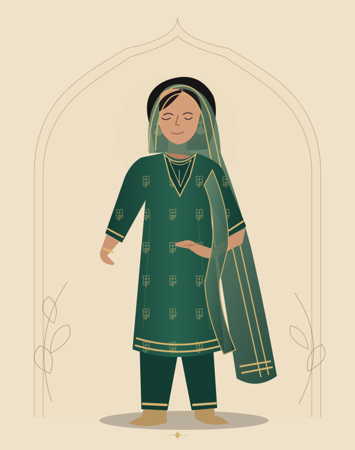
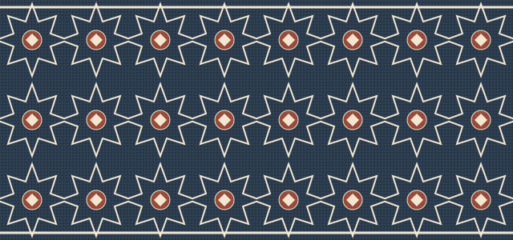
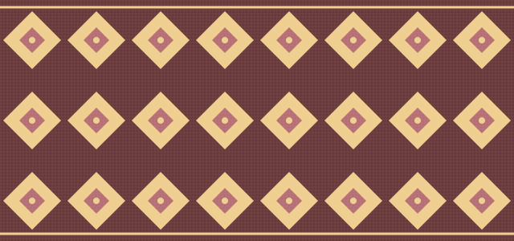
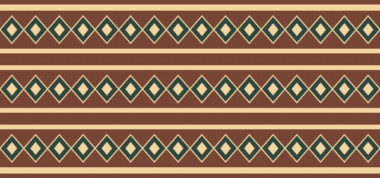
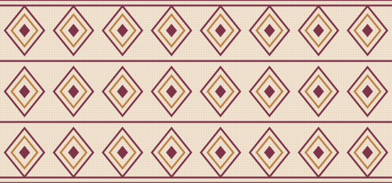

← Back to MahrukhOUR CULTURAL NOTEBOOK · ورثہ
Many threads.
Many ways to belong.
In the fall of a dupatta, the rhythm of a border, the outfit you make your own: clothing can hold a little of home.
Pakistan’s textile stories are wonderfully varied. These four starting points celebrate particular traditions, their makers and connections across borders. They are a small introduction, not a complete portrait of the country.


SINDH & CROSS-BORDER CONNECTIONS
Ajrak / Ajrakh
A block-printing tradition associated with Sindh and also practised in Kutch. Scholarship describes layered resist and mordant processes, deep blues and reds, and carefully repeated geometry. A printed look alone cannot tell us how a cloth was made.
Read the Textile Society of America paper ↗
PUNJAB · A SHARED HERITAGE
Phulkari
Women’s embroidery has helped shape this Punjabi tradition across present-day Pakistan and India. Historic examples include geometric compositions, animals and scenes of village life. Its stories reach beyond a single floral motif, faith or modern border.
Explore the Philadelphia Museum of Art exhibition ↗
BALOCH COMMUNITIES
Balochi embroidery
Documented women’s garments feature elaborate geometric embroidery at the chest, cuffs and long pocket panel. Baloch textile traditions connect communities in Pakistan, Iran, Afghanistan and beyond. Both hand and machine work exist; a seller should explain the technique of the actual piece.
Read the Textile Research Centre’s account ↗
A CLOSER LOOK · SWAT
A shawl’s quiet detail
One woman’s shawl in the British Museum collection, acquired in Swat, combines white cotton with embroidered diamond forms. Its catalogue discusses connections with neighbouring textile traditions—a reminder that craft histories meet and move, rather than fitting neatly inside regional labels.
See the museum’s shawl record ↗ INSPIRATION, WITH CARE
Honour the story behind the cloth.
The illustrations here are original decorative studies, not reproductions of museum textiles. They do not certify the origin or technique of anything in our collection. Look to each product’s craft details for verified information about that particular piece.
We believe there is room for everyday dressing, personal expression and celebration. Your way of wearing a dupatta, choosing a silhouette or enjoying colour is yours.
Find something that feels like you ↗